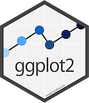

Hands-on Workshop
Cosa impareremo oggi:
Approccio:
Scarica il file esercizi: 04_geometrie_base_exercises.R
30 esercizi organizzati in 6 parti:
Approccio suggerito:
Definizione:
Le geometrie (geom_*) sono gli oggetti geometrici che rappresentano i dati nel grafico.
Ogni geom:
ggplot() o definisce i propriStruttura base:
Categorie principali:
Oggi: solo x e y
Focus esclusivo su mappature x e y. Color, size, shape, etc. → prossime sessioni.
Situazioni ideali:
Problemi comuni:
alpha bassogeom_jitter()Varianti:
Aggiunge linea di trend con intervallo di confidenza
Metodi disponibili:
# LOESS - default per n < 1000 (smooth locale)
geom_smooth(method = "loess")
# Lineare
geom_smooth(method = "lm")
# GAM - General Additive Model
geom_smooth(method = "gam")
# GLM - Generalized Linear Model
geom_smooth(method = "glm")Parametri:
Esempio completo:
ggplot(mpg, aes(x = displ, y = hwy)) +
geom_point(alpha = 0.3) +
geom_smooth(method = "lm", se = TRUE)Quando usarlo:
Attenzione
geom_smooth() non sostituisce analisi statistica formale. È uno strumento esplorativo!
Adesso tocca a te!
Combinare histogram + density:
ggplot(mpg, aes(x = hwy)) +
geom_histogram(aes(y = after_stat(density)),
alpha = 0.5) +
geom_density(color = "red", linewidth = 1)Quando NON usarlo:
adjust parameter
adjust < 1: più dettaglio
adjust > 1: più smooth
geom_freqpoly():
Histogram come linea (utile per sovrapposizioni)
Vantaggi:
geom_histogram()Adesso tocca a te!
geom_bin2d():
Heatmap rettangolare per big data
Quando usarlo:
Adesso tocca a te!
geom_boxplot():
Componenti:
Parametri:
Adesso tocca a te!
geom_errorbar():
Adesso tocca a te!
Layering multiplo:
ggplot(mpg, aes(x = displ, y = hwy)) +
geom_point(alpha = 0.3) + # scatter
geom_smooth(method = "lm") + # trend lineare
geom_rug(alpha = 0.2) # distribuzioni marginaliBest practices:
alpha per trasparenza quando sovrapponiEsempio complesso:
Adesso tocca a te!
Documentazione:
Cheat sheets:
Prossime sessioni:
Domande?
Usa Slack o email per supporto sugli esercizi!

REVELO Training - Data Viz 2025